- Start
- Serwis i remonty
Serwis i remonty basenów
Po budowie zostajemy z klientem. Serwisujemy i naprawiamy baseny, remontujemy starsze i doradzamy przez cały rok.
Zgłoś serwis lub remontSerwis basenów
Basen potrzebuje opieki, żeby woda była czysta, a urządzenia działały bez przerw. Zajmujemy się serwisem i naprawami basenów oraz służymy fachową poradą przez cały rok, także po zakończeniu budowy.
Remonty basenów
Remontujemy starsze baseny, żeby znów dobrze wyglądały i sprawnie działały. Przy remoncie można też unowocześnić wyposażenie basenu.
Co napisać w zgłoszeniu
Prosimy krótko opisać basen (wymiary, wiek, wyposażenie) i to, co się dzieje albo co chcą Państwo zmienić. Zdjęcie basenu bardzo pomaga. Łatwiej wtedy doradzić i zaplanować wizytę.

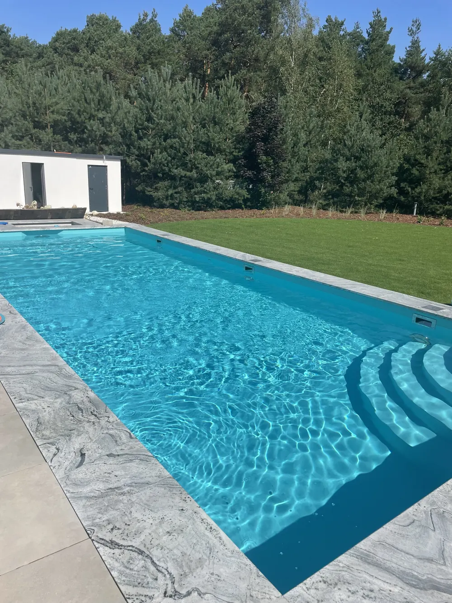
Remont basenu: nowa folia i skimmer
Basen pod zadaszeniem: zdjęcie starej folii, wymiana skimmera w ścianie, nowy podkład i folia. Zdjęcia po kolei, od stanu przed remontem.

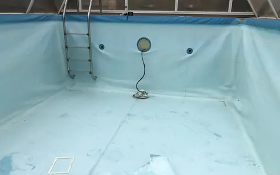

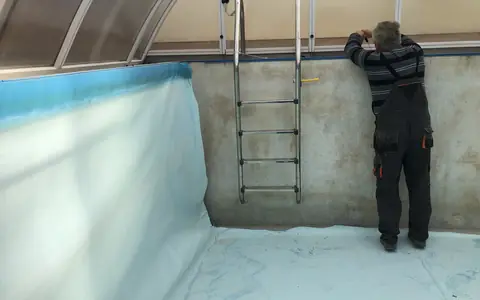

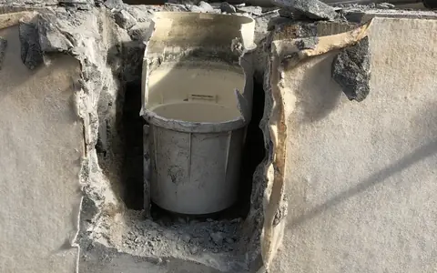

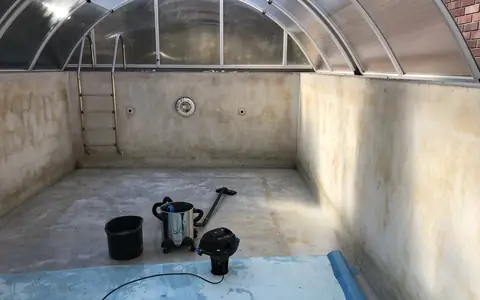

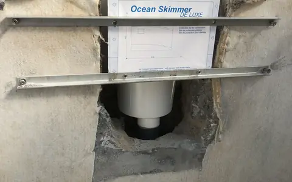

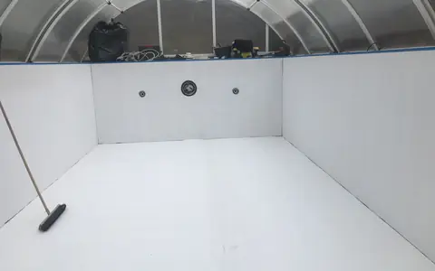

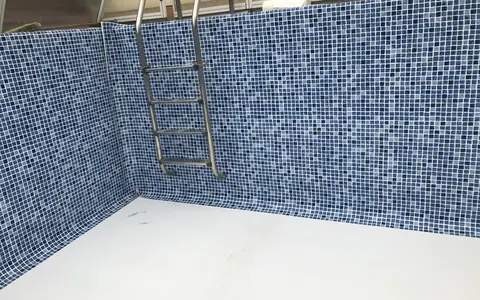

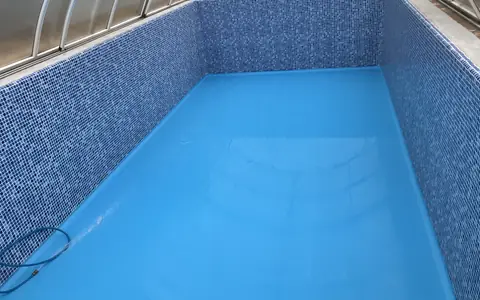

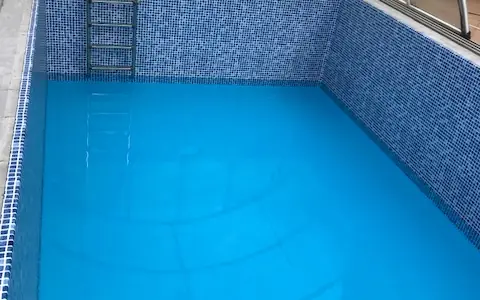
Remont basenu ogrodowego
Przebudowa starszego basenu: rozbiórka opaski, prace przy niecce, nowa folia i wyposażenie. Zdjęcia po kolei.

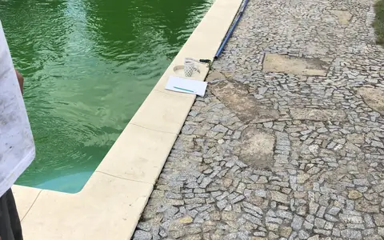

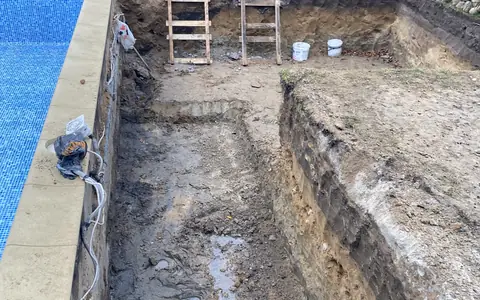

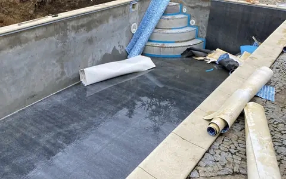

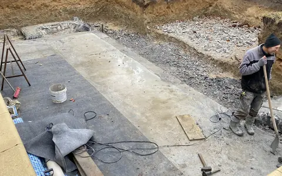

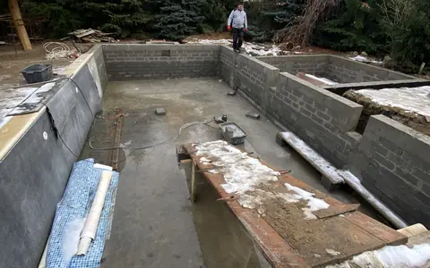

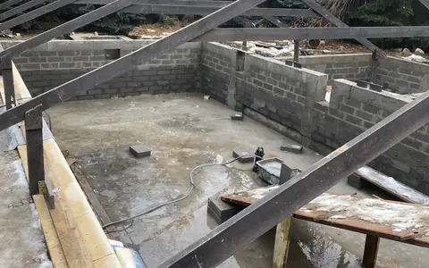

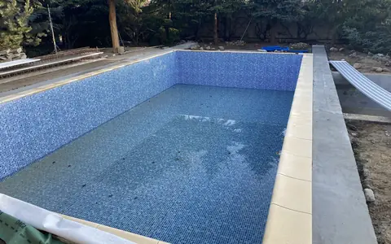

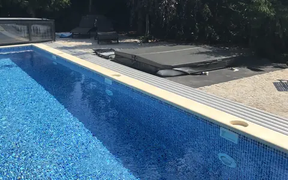

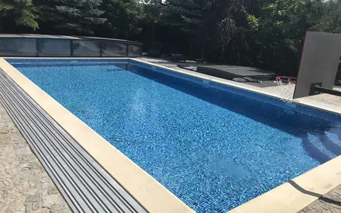
Zobacz też
Basen wymaga serwisu albo remontu?
Opiszcie Państwo problem lub plany, a odezwiemy się z odpowiedzią.